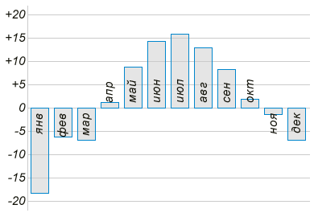
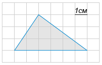
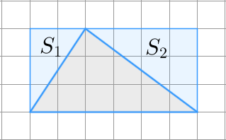
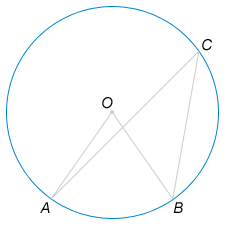
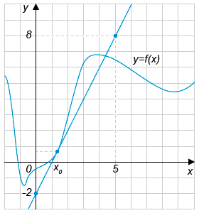
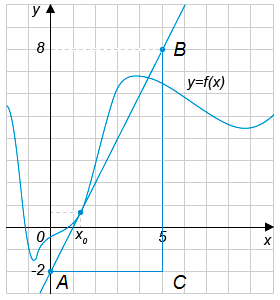

| Поиск | Почта | Карты | Маркет | Новости | Словари | Блоги | Видео | Картинки | ещё |
| Выход | |
|
|
| |||||||||||||||||||||||
ЕГЭ по математике. Вариант 1
1 из 18
Вопрос B1
Летом килограмм клубники стоит 80 рублей. Маша купила 1 кг 750 гр клубники.
Сколько рублей сдачи она должна получить с 200 рублей?
Вы пропустили вопрос. Правильно: 60 Стоимость покупки составила Следовательно, Маша должна получить
2 из 18
Вопрос B2
На диаграмме показана средняя температура воздуха (в градусах Цельсия) в Санкт-Петербурге за каждый месяц 1988 года. 
Определите по диаграмме, сколько было месяцев, когда среднемесячная температура была выше нуля.
Вы пропустили вопрос. Правильно: 7
Среднемесячная температура была выше нуля в апреле, мае, июне, июле, августе, сентябре и октябре.
3 из 18
Вопрос B3
Найдите площадь треугольника, изображённого на клетчатой бумаге с размером клетки 1 см х 1 см (см. рис.). Ответ дайте в квадратных сантиметрах. 
Вы пропустили вопрос. Правильно: 9
Достроим треугольник до прямоугольника (см. рисунок). 
4 из 18
Вопрос B4
Интернет-провайдер (компания, оказывающая услуги по подключению к сети Интернет) предлагает три тарифных плана.
Пользователь предполагает, что его трафик составит 650 Мб в месяц, и исходя из этого выбирает наиболее дешевый тарифный план.
Сколько рублей заплатит пользователь за месяц, если его трафик действительно будет равен 650 Мб?
Вы пропустили вопрос. Правильно: 700
Рассчитаем стоимость Тарифный план «0». Абонентская плата не взимается, стоимость Тарифный план «500». Абонентская плата составляет Общая стоимость Тарифный план «800». Абонентская плата составляет
5 из 18
Вопрос B5
Найдите корень уравнения
Вы пропустили вопрос. Правильно: 38
Возведём в квадрат обе части уравнения.
6 из 18
Вопрос B6
Центральный угол на 
Найдите вписанный угол. Ответ дайте в градусах.
Вы пропустили вопрос. Правильно: 36
Угол По условию: Подставим второе равенство в первое:
7 из 18
Вопрос B7
Найдите
Вы пропустили вопрос. Правильно: -0,8
Подставим известное значение  По условию
8 из 18
Вопрос B8
На рисунке изображены график функции 
Найдите значение производной функции
Вы пропустили вопрос. Правильно: 2 Значение производной функции в точке равно тангенсу угла наклона касательной, проведенной к графику функции в данной точке. Рассмотрим прямоугольный треугольник Тангенс острого угла в прямоугольном треугольнике равен отношению длины противолежащего катета к длине прилежащего.
9 из 18
Вопрос B9
Ребра прямоугольного параллелепипеда, выходящие из одной вершины, имеют длины 3, 4 и 12. 
Найдите длину диагонали этого прямоугольного параллелепипеда.
Вы пропустили вопрос. Правильно: 13
Найдем длину диаго  нали нали Тогда:
10 из 18
Вопрос B10
Проводится жеребьёвка Лиги Чемпионов. На первом этапе жеребьёвки восемь команд, среди которых команда «Барселона», распределились случайным образом по восьми игровым группам – по одной команде в группу. Затем по этим же группам случайным образом распределяются еще восемь команд, среди которых команда «Зенит».
Найдите вероятность того, что команды «Барселона» и «Зенит» окажутся в одной игровой группе.
Вы пропустили вопрос. Правильно: 0,125
После первого этапа жеребьевки команда "Барселона" попадет в некоторую группу, фиксируем ее номер. Теперь задача сводится к тому, чтобы определить вероятность того, что команда "Зенит" попадет в эту же группу. Всего групп
11 из 18
Вопрос B11
В цилиндрическом сосуде уровень жидкости достигает 48 см.
На какой высоте будет находиться уровень жидкости, если её перелить во второй цилиндрический сосуд, диаметр которого в 2 раза больше диаметра первого? Ответ выразите в см.
Вы пропустили вопрос. Правильно: 12
Для решения задачи воспользуемся формулой вычисления объема цилиндра Пусть Объем жидкости в первом сосуде равен Объем жидкости во втором сосуде равен Объем жидкости не изменяется при переливании из первого во второй сосуд: Из последнего равенства выразим
12 из 18
Вопрос B12
В ходе распада радиоактивного изотопа его масса уменьшается по закону
Через сколько минут масса изотопа будет равна 12,5 мг?
Вы пропустили вопрос. Правильно: 10
Подставим все числовые данные из условия задачи в формулу : Поскольку показательная функция
13 из 18
Вопрос B13
В понедельник акции компании подорожали на некоторое число процентов, а во вторник подешевели на то же самое число процентов. В результате они стали стоить на 4% дешевле, чем при открытии торгов в понедельник.
На сколько процентов подорожали акции компании в понедельник?
Вы пропустили вопрос. Правильно: 20
Пусть В понедельник акции подорожали на Во вторник акции подешвели на Поскольку Следовательно, в понедельник и во вторник стоимость акций изменялась на
14 из 18
Вопрос B14
Найдите наибольшее значение функции
Вы пропустили вопрос. Правильно: 3
Заметим, что функция Наибольшее свое значение на отрезке функция принимет в точке экстремума или на на концах отрезка. Определим точки, подозрительные на экстремумы. Для этого найдем производную функции: Решим уравнение Точка Вычислим значения функции в точке При При При Наибольшим из полученных чисел является
15 из 18
Вопрос C1-a
Решите уравнение
Вы пропустили вопрос
Другие вопросы C1-a
Посмотреть пояснение
Воспользуемся формулой понижения степени Разделим уравнение на
16 из 18
Вопрос C1-b Текст к этому заданию смотрите в вопросе
C1-a.
Найти корни этого уравнения на промежутке
Вы пропустили вопрос
17 из 18
Вопрос C2
В основании прямой призмы
Найдите угол между прямыми
Вы пропустили вопрос. Правильно: 60
18 из 18
Вопрос C3
Решите систему неравенств:
Вы пропустили вопрос
Попробуйте еще раз. Варианты:
Демонстрационный вариант теста ЕГЭ по математике 2013 года содержит только одну из двух частей экзаменационной работы. Задания могут отличаться от реальных. |
| Задания по математике подготовлены по заказу Яндекса в соответствии с требованиями Министерства образования и науки Российской Федерации к проведению Единого государственного экзамена в 2013 году. | © 2010—2013 «Яндекс» |
 Затрачено времени: менее минуты
Затрачено времени: менее минуты